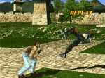

Tekken 2


Tekken 2 |
|
System: Playstation |

ReviewI ignored Tekken when it first came out in the arcades. I had been slaughtered every time I tried to play Virtua Fighter, and since then I had been scared of polygon fighters in general. But then I heard that it was based directly on hardware for the as-yet-unreleased Playstation. The idea that I would be playing this very game at home one day was mindboggling, so I played it on my very next trip to the arcade. I was immediately hooked. The fighters were poetry in motion. (Especially Nina.) The controls were fluid and the game was simply a joy to play. It was then that I knew I was definitely looking forward to the Playstation's release. Tekken 2 showed up in the arcades just before TK1 became available for the home system. Needless to say, TK2 dampened my enthusiasm for the original a bit, but I bought TK1 anyway and was entertained, knowing it was the only thing that would keep me from going mad waiting for the sequel. I imported Tekken 2 when it was released in Japan and it has yet to disappoint me in any way. The rendered intros and endings are absolutely incredible. (It is highly recommended that you read up on each character's history so you know what's going on, by the way. There are some endings I still don't understand, though some just plain don't make sense.) I'm still mystified by the scene on the city street; dozens of people are walking around, all rendered. It partly explains the huge number of people hired to work on the intro and ending sequences. All these sequences are now motion captured as well, so the characters have uncanny realism to their movements. Side note: I have seen Anna's ending, and though the rumors will no doubt fly about this one, I interpret this as just another prank on Nina's part. I would also prefer to think that Anna is *not* a lesbian. :) With 23 characters available (I count Devil/Angel and Roger/Alex as one each), I haven't even played as all of them yet. Some of the bosses, like in TK1, can't really be counted as their own characters, since they have few moves that aren't borrowed from other characters. But Baek has a style almost completely his own, and many other bosses have had unique moves added. Just learning to use different special moves in tandem with each other extends the life of the game a great deal. Also, each boss now has his own individual background, music (though most of these are direct ports from TK1), and rendered ending! The main characters have all been vastly improved, to the point where it is now more fun to play as them than as their bosses. Nina has several nasty kicks added to her arsenal. It seems the developers loved Law's flip kick so much that he now uses it after almost every move. King now has a set of throws he can do one after the other, as well as some brutal new punches. Michelle is actually a fearsome fighter now, with her kicks and punches seeming to come from all heights and angles. Yoshimitsu has some strange moves added like teleports, life replenishment (slowly), and lots of unblockables with his sword. And the two new characters alone are reason enough to consider purchasing this game (though I wish there had been more additions). Jun is queen of the combo, with a set of exotic and painful looking kicks. And Lei is just plain unpredictable (many of his moves are initiated by lying down in the middle of the fight). My favorite additions to the various movelists have to be all the counters. Some, like Jun and Paul, can catch an opponent's attack and use their momentum to slam them to the ground. The best part about these counters is that they seem to be specialized to the attack being used. (Jun can catch Yoshi's sword by the blade and throw him to the ground, for example.) Other characters have sidesteps that carry them onto a differtent plane from an opponent's attack and then let them attack from the side. These damage an opponent's HP, but more importantly, they damage his pride. The incredible variety of moves and characters and the fact that it's just plain fun to play make this a worthwhile investment. If you purchase no other fighting game this year, if you purchase no other game at all this year, buy Tekken 2. I can think of no other game that will give you more for your money. |
|
|